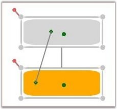

Make a connection to the port through code behind
The ConnectionHeadPort and ConnectionTailPort properties can be used to specify the ports to be used for connecting to the nodes. The HeadNode and TailNode should still be specified.
The following code shows the connection to the ports:
|
[C#]
Node nodeObject = new Node(Guid.NewGuid(), "Node1"); diagramModel.Nodes.Add(nodeObject); nodeObject.AllowPortDrag = true;Node node = new Node(Guid.NewGuid(), "Node1"); node.Shape = Shapes.RoundedSquare; node.Width = 150; node.Height = 50; node.OffsetX = 250; node.OffsetY = 100;
ConnectionPort port = new ConnectionPort(); port.Left = 50; port.Top = 20; port.Node = node; node.Ports.Add(port); diagramModel.Nodes.Add(node);
Node node1 = new Node(Guid.NewGuid(), "Node1"); node1.Shape = Shapes.RoundedSquare; node1.Width = 150; node1.Height = 50; node1.OffsetX = 250; node1.OffsetY = 200; ConnectionPort port1 = new ConnectionPort(); port1.Left = 20; port1.Top = 20; port1.Node = node1; node1.Ports.Add(port1); diagramModel.Nodes.Add(node1); diagramModel.Nodes.Add(node1);
LineConnector o = new LineConnector(); o.ConnectorType = ConnectorType.Straight; o.TailNode = node; o.HeadNode = node1; o.HeadDecoratorShape = DecoratorShape.None; o.TailDecoratorShape = DecoratorShape.None; o.ConnectionTailPort = port; o.ConnectionHeadPort = port1;
LineConnector o1 = new LineConnector(); o1.ConnectorType = ConnectorType.Straight; o1.TailNode = node; o1.HeadNode = node1; o1.HeadDecoratorShape = DecoratorShape.None; o1.TailDecoratorShape = DecoratorShape.None; diagramModel.Connections.Add(o); diagramModel.Connections.Add(o1); |
|
[VB]
Dim nodeObject As New Node(Guid.NewGuid(), "Node1") diagramModel.Nodes.Add(nodeObject) nodeObject.AllowPortDrag = True
Dim node As New Node(Guid.NewGuid(), "Node1") node.Shape = Shapes.RoundedSquare node.Width = 150 node.Height = 50 node.OffsetX = 250 node.OffsetY = 100
Dim port As New ConnectionPort() port.Left = 50 port.Top = 20 port.Node = node node.Ports.Add(port) diagramModel.Nodes.Add(node)
Dim node1 As New Node(Guid.NewGuid(), "Node1") node1.Shape = Shapes.RoundedSquare node1.Width = 150 node1.Height = 50 node1.OffsetX = 250 node1.OffsetY = 200
Dim port1 As New ConnectionPort() port1.Left = 20 port1.Top = 20 port1.Node = node1 node1.Ports.Add(port1) diagramModel.Nodes.Add(node1) diagramModel.Nodes.Add(node1)
Dim o As New LineConnector() o.ConnectorType = ConnectorType.Straight o.TailNode = node o.HeadNode = node1 o.HeadDecoratorShape = DecoratorShape.None o.TailDecoratorShape = DecoratorShape.None o.ConnectionTailPort = port o.ConnectionHeadPort = port1
Dim o1 As New LineConnector() o1.ConnectorType = ConnectorType.Straight o1.TailNode = node o1.HeadNode = node1 o1.HeadDecoratorShape = DecoratorShape.None o1.TailDecoratorShape = DecoratorShape.None diagramModel.Connections.Add(o) diagramModel.Connections.Add(o1) |

Figure 76: Connecting to Port
Make a connection to the port at run time
The following steps illustrate creating a connection to the port at run time.
To connect to a port on the node at run time:
1. Click the desired line icon and start dragging the mouse from the desired port on the node to the target node or port.
2. As the mouse pointer moves over the ports, a red border will appear on the respective ports indicating that the mouse is over the port.
3. To make a connection, drop the other end of the line on the desired port or node.
Connecting to the center port will make the connection to the boundary of the node.
If the node does not contain any port other than the default center port and the end of the line connector is dropped on the node, then the connection will take place on the node's boundary.
In case the node contains a port, then to connect to the node's boundary, the line connector should be dropped on the center port. A red border will appear around the node indicating that the connection will be made to the node's boundary.